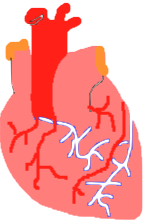
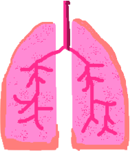

Year
Info about this event
The 1st totipotent cell forms when the sperm and egg unite.

They continue being formed until the 4th day.

Then no more totipotent cells are made, but there are three other potencies!

Embryonic cells are an example of pluripotent cells.

For example, they can become hair cells, or blood cells, or skin cells, or brain cells!

Multipotent cells are similar to pluripotent stem cells.

However, each multipotent cell cannot turn into all other cells.

Unipotent stem cells can only turn into one type of cell.

Types of Stem Cells
 Embryonic
Embryonic
 Adult
Adult
 Induced Pluripotent
Induced Pluripotent
Embryonic
Embryonic stem cells are taken from the blastocyst, which occurs in an early developmental stage in embryonic development.
Embryonic stem cells are not currently in use in any way.
Their potential uses include:
- Organ generation
- Safe testing of drugs


Adult
Adult stem cells can be found in many places including bone marrow, the brain, blood, and the intestine.
An example of their use:
- Bone marrow transplantations!
- Growing skin for burn victims to help them recover and heal.
- A potential use is organ generation.
Adult stem cells are naturally unipotent, but can be induced to become pluripotent.
Induced Pluripotent
These are unipotent cells that are manipulated to become pluripotent.
Their potential uses are the same as that of embryonic stem cells.